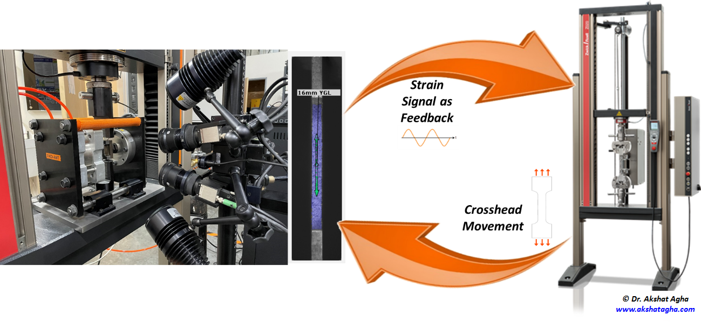
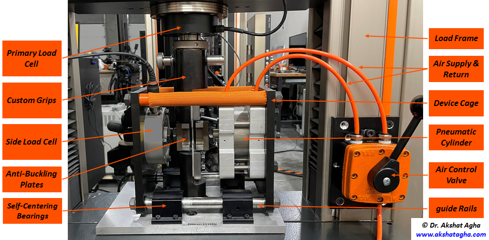

In sheet metal forming and stamping operations, modeling the behavior of sheet metal alloys for springback prediction is known to be very challenging, not only because of the complex models needed to account for kinematic hardening (such as the Yoshida-Uemori Model) but more importantly because of the experimental limitations of our ability to perform the complex tests needed to calibrate such models. For instance, reliable monotonic uniaxial compression tests and then cyclic tension-followed-by-compression tests are essential for characterizing the response of the material under those loading conditions, providing quantitative evaluation of the Bauschinger Effect and tension-compression asymmetry in the material, and ultimately generating the right data to calibrate the constitutive model. This work tries to shed some light on this topic by introducing a new anti-buckling device that is particularly designed to enable accurate and repeatable compression and cyclic testing. The device exerts side loading on the sheet test sample to prevent it from buckling during testing under compression loading conditions. The device is designed to address the limitations of other approaches and devices presented in the literature, and it features control and monitoring of side forces, self-centering, and the ability to achieve large plastic compressive strains. More importantly, digital image correlation (DIC) is integrated with the anti-buckling device and testing load frame to provide accurate strain measurements. In this study, DIC was used in a real-time mode (unlike the typical post-deformation mode) to facilitate accurate load reversal during cyclic testing. For validation, the presented setup was used for testing two selected materials with practical applications in the automotive body sector: AA6016-T4 and DP980 steel sheets. The results demonstrate how the developed setup and the integration with real-time DIC provide a robust and reliable means for generating high-quality curves for the different tests needed for the calibration of springback models.
http://doi.org/10.1520/STP163820210045 | Download PDF This work presents an innovative test setup which has the following capabilities:

Copyright © Akshat Agha